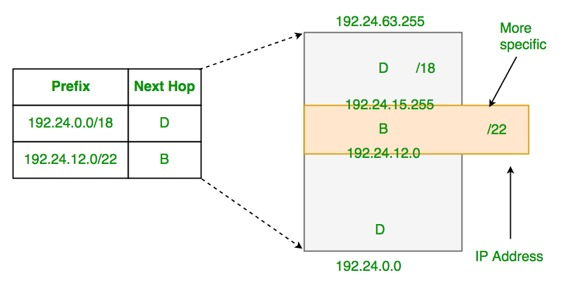

What is Forwarding?
Forwarding is moving incoming packets to appropriate interface. Routers use forwarding table to decide which incoming packet should be forwarded to which next hop.
What is IP prefix?
IP prefix is a prefix of IP address. All computers on one network have same IP prefix. For example, in 192.24.0.0/18, 18 is length of prefix and prefix is first 18 bits of the address.
How does forwarding work?
Routers basically look at destination address’s IP prefix, searches the forwarding table for a match and forwards the packet to corresponding next hop in forwarding table.
What happens if the prefixes overlap?
Since prefixes might overlap (this is possible as classless addressing is used everywhere), an incoming IP’s prefix may match multiple IP entries in table.
For example, consider the below forwarding table
| Prefix | Next Hop |
|---|---|
| 192.24.0.0/18 | D |
| 192.24.12.0/22 | B |
In above table, addresses from 192.24.12.0 to 192.24.15.255 overlap, i.e., match with both entries of the table.
To handle above situation, routers use Longest Prefix Matching rule. The rule is to find the entry in table which has the longest prefix matching with incoming packet’s destination IP, and forward the packet to corresponding next hope.
In the above example, all packets in overlapping range (192.24.12.0 to 192.24.15.255) are forwarded to next hop B as B has longer prefix (22 bits).

{kind=link}
Example 1: Routers forward a packet using forwarding table entries. The network address of incoming packet may match multiple entries. How routers resolve this?
(A) Forward it the the router whose entry matches with the longest prefix of incoming packet
(B) Forward the packet to all routers whose network addresses match.
(C) Discard the packet.
(D) Forward it the the router whose entry matches with the longest suffix of incoming packet
Answer: (A) The network addresses of different entries may overlap in forwarding table. Routers forward the incoming packet to the router which hash the longest prefix matching with the incoming packet.
Example 2: Classless Inter-domain Routing (CIDR) receives a packet with address 131.23.151.76. The router’s routing table has the following entries: (GATE CS 2015)
Prefix Output Interface Identifier 131.16.0.0/12 3 131.28.0.0/14 5 131.19.0.0/16 2 131.22.0.0/15 1
The identifier of the output interface on which this packet will be forwarded is ______.
Answer: “1”. We need to first find out matching table entries for incoming packet with address “131.23.151.76”. The address matches with two entries “131.16.0.0/12” and “131.22.0.0/15” (We found this by matching first 12 and 15 bits respectively).
So should the packet go to interface 3 or 1? We use Longest Prefix Matching to decide among two. The most specific of the matching table entries is used as the interface. Since “131.22.0.0/15” is most specific, the packet goes to interface 1.
Exercise
Consider the following routing table of a router.
| Prefix | Next Hop |
|---|---|
| 192.24.0.0/18 | D |
| 192.24.12.0/22 | B |
Consider the following three IP addresses.
- 192.24.6.0
- 192.24.14.32
- 192.24.54.0
How are the packets with above three destination IP addresses are forwarded?
(A) 1->D, 2->B, 3->B
(B) 1->D, 2->B, 3->D
(C) 1->B, 2->D, 3->D
(D) 1->D, 2->D, 3->D